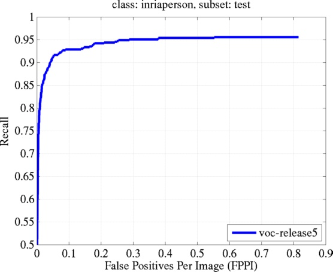

Over the past few years we have developed a complete learning-based
system for detecting and localizing objects in images. Our system
represents objects using mixtures of deformable part models. These
models are trained using a discriminative method that only requires
bounding boxes for the objects in an image. The approach leads to
efficient object detectors that achieve state of the art results
on the PASCAL and INRIA person datasets.
At a high level our system can be characterized by the combination of
This work was awarded the PASCAL VOC "Lifetime Achievement" Prize in 2010.
Here you can download a complete implementation of our system. The current implementation extends the system in [2] as described in [6]. The models in this implementation are structured using the grammar formalism presented in [4]. Previous releases are available below.
The distribution contains object detection and model learning code, as well as models trained on the PASCAL and INRIA Person datasets.
This release also includes code for
The system is implemented in MATLAB, with helper functions written in C/C++ for efficiency reasons. The software was tested on several versions of Linux and Mac OS X using MATLAB version R2011a. Earlier versions of MATLAB should also work, though there may be compatibility issues with releases prior to 2009.
For questions regarding the source code please read the FAQ first. Contact Ross Girshick at ross...@gmail.com (click the "..." to reveal the email address) if you're still stuck.
Source code and model download:
voc-release5.tgz (updated Sept. 5, 2012).
New: I also maintain a repository
on github that includes bug fixes, speed improvements, and other updates. In general that code will produce different (though similar) results to the
tables listed below.
What's changed since voc-release4? changelog
This project has been supported by the National Science Foundation under Grant No. 0534820, 0746569 and 0811340.
When citing our system, please cite reference [2] and the website for this specific release. Bibtex entries are provided below for your convenience.
@misc{voc-release5,
author = "Girshick, R. B. and Felzenszwalb, P. F. and McAllester, D.",
title = "Discriminatively Trained Deformable Part Models, Release 5",
howpublished = "http://people.cs.uchicago.edu/~rbg/latent-release5/"}
@article{lsvm-pami,
title = "Object Detection with Discriminatively Trained Part Based Models",
author = "Felzenszwalb, P. F. and Girshick, R. B. and McAllester, D. and Ramanan, D.",
journal = "IEEE Transactions on Pattern Analysis and Machine Intelligence",
year = "2010", volume = "32", number = "9", pages = "1627--1645"}
The models included with the source code were trained on the train+val
dataset from each year and evaluated on the corresponding test
dataset.
This is exactly the protocol of the "comp3" competition.
Below are the average precision scores we obtain in each category.
| aero | bicycle | bird | boat | bottle | bus | car | cat | chair | cow | table | dog | horse | mbike | person | plant | sheep | sofa | train | tv | mean | |
|---|---|---|---|---|---|---|---|---|---|---|---|---|---|---|---|---|---|---|---|---|---|
| without context | 45.6 | 49.0 | 11.0 | 11.6 | 27.2 | 50.5 | 43.1 | 23.6 | 17.2 | 23.2 | 10.7 | 20.5 | 42.5 | 44.5 | 41.3 | 8.7 | 29.0 | 18.7 | 40.0 | 34.5 | 29.6 |
| with context | 48.2 | 52.2 | 14.8 | 13.8 | 28.7 | 53.2 | 44.9 | 26.0 | 18.4 | 24.4 | 13.7 | 23.1 | 45.8 | 50.5 | 43.7 | 9.8 | 31.1 | 21.5 | 44.4 | 35.7 | 32.2 |
| with context & extra octave |
49.2 | 53.8 | 13.1 | 15.3 | 35.5 | 53.4 | 49.7 | 27.0 | 17.2 | 28.8 | 14.7 | 17.8 | 46.4 | 51.2 | 47.7 | 10.8 | 34.2 | 20.7 | 43.8 | 38.3 | 33.4 |
| person detection grammar |
49.9 |
| aero | bicycle | bird | boat | bottle | bus | car | cat | chair | cow | table | dog | horse | mbike | person | plant | sheep | sofa | train | tv | mean | |
|---|---|---|---|---|---|---|---|---|---|---|---|---|---|---|---|---|---|---|---|---|---|
| without context | 33.2 | 60.3 | 10.2 | 16.1 | 27.3 | 54.3 | 58.2 | 23.0 | 20.0 | 24.1 | 26.7 | 12.7 | 58.1 | 48.2 | 43.2 | 12.0 | 21.1 | 36.1 | 46.0 | 43.5 | 33.7 |
| with context | 36.6 | 62.2 | 12.1 | 17.6 | 28.7 | 54.6 | 60.4 | 25.5 | 21.1 | 25.6 | 26.6 | 14.6 | 60.9 | 50.7 | 44.7 | 14.3 | 21.5 | 38.2 | 49.3 | 43.6 | 35.4 |
| person detection grammar |
48.7 |
We also trained and tested a model on the INRIA Person dataset.
We scored the model using the PASCAL evaluation methodology in the
complete test dataset, including images without people.
Annotations for the INRIA dataset in the PASCAL VOC format are
available:
INRIA person training README
INRIA person annotations
INRIA Person average precision: 88.0
Plot of Recall / False positives per image (FPPI)

{kind=link}
{kind=link}
{kind=link}